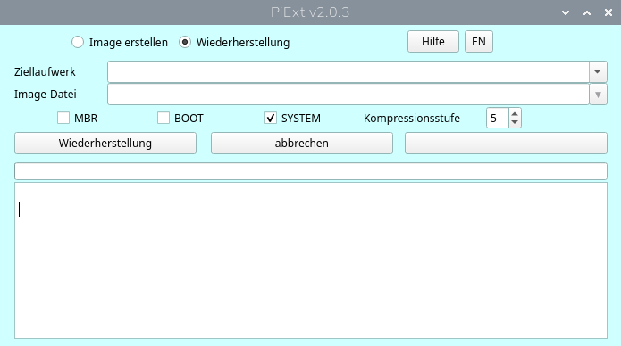

PiExt ist eine Backup- und Wiederherstellungslösung für Raspberry-Pi-Systeme. Sie besteht aus zwei Programmen für unterschiedliche Betriebssysteme:
PiExt erstellt komprimierte Images von Linux- EXT2-, EXT3- und EXT4-Systempartitionen und stellt diese wieder her. Zusätzlich werden der MBR und die Bootpartition eines vollständigen Laufwerks gesichert.
PiExt unterstützt sowohl eine grafische Benutzeroberfläche (GUI) als auch die Kommandozeile (CLI). Über die CLI ist die automatisierte Image-Erstellung möglich.
PiExtRestorer ist das Windows-Programm zur Wiederherstellung von Images, die mit PiExt erstellt wurden. MBR, Bootpartition und Systempartition können gezielt ausgewählt und einzeln oder gemeinsam wiederhergestellt werden.
Die Image-Erstellung ist unter Windows nicht verfügbar. PiExtRestorer dient ausschließlich der Wiederherstellung.
Beide Programme verwenden dasselbe PiExt-Imageformat und werden gemeinsam in einem Release veröffentlicht.
Für das Systemimage speichert PiExt nur die vom Dateisystem aktuell verwendeten Sektoren. Die Daten werden während der Image-Erstellung mit Zstandard (ZSTD) komprimiert. MBR und Bootpartition werden separat gespeichert.
Die jeweils aktuelle Version von PiExt und PiExtRestorer steht gemeinsam auf GitHub zur Verfügung. Im Release sind beide Installationsdateien enthalten.
piext.deb – Debian-Paket für Raspberry Pi OS und andere geeignete Debian-basierte Systeme.PiExtRestorer_Setup.exe – Installationsprogramm für PiExtRestorer.Aktuelle Version von PiExt und PiExtRestorer auf GitHub herunterladen
Laden Sie piext.deb herunter und installieren Sie das Paket
auf Ihrem Raspberry Pi, zum Beispiel mit:
sudo apt install ./piext.debPiExt kann anschließend über das Anwendungsmenü oder über ein Terminal gestartet werden. Für den Zugriff auf Laufwerke und Partitionen muss PiExt mit Root-Rechten ausgeführt werden:
sudo piext
Laden Sie PiExtRestorer_Setup.exe aus dem GitHub-Release herunter
und führen Sie das Installationsprogramm aus. Starten Sie PiExtRestorer
anschließend mit Administratorrechten, damit das Programm direkt auf
physische Laufwerke und Partitionen zugreifen kann.
Unter Linux bietet PiExt Funktionen zum Erstellen und Wiederherstellen von Images. Unter Windows stellt PiExtRestorer die Wiederherstellungsfunktionen bereit. In beiden Programmen können das Ziellaufwerk, der Image-Ordner und die wiederherzustellenden Komponenten ausgewählt werden.

Die Abbildung zeigt die Linux-Version PiExt.
Ein typisches Raspberry-Pi-Systemlaufwerk enthält eine Bootpartition und eine Linux-Systempartition. PiExt sichert die Laufwerksinformationen einschließlich MBR sowie Boot- und Systempartition.
Abhängig vom verwendeten Gerät können sich die Partitionsnamen
unterscheiden. Bei normalen Laufwerken werden beispielsweise
/dev/sda1 und /dev/sda2 verwendet, während
SD-Karten und NVMe-Laufwerke beispielsweise Namen wie
/dev/mmcblk0p1 oder /dev/nvme0n1p1 verwenden
können.
Die Image-Erstellung ist ausschließlich unter Linux mit PiExt möglich. Wählen Sie das vollständige Quelllaufwerk und anschließend das Verzeichnis, in dem die Images gespeichert werden sollen.
Ein vollständiges Raspberry-Pi-Backup besteht aus getrennten Image-Komponenten:
Das Systemimage enthält nur die aktuell vom Dateisystem verwendeten Sektoren. Dadurch ist das Image wesentlich kleiner als ein Rohimage der vollständigen Partition.
Das erste System-Backup in einem Image-Verzeichnis wird automatisch zum Base Image. Es enthält die vollständigen benötigten Dateisystemdaten für die Wiederherstellung der Systempartition.
Nachfolgende System-Backups werden als Differential Images gespeichert. Ein Differential Image wird direkt auf Basis des Base Image erstellt und enthält die Änderungen gegenüber diesem Base Image.
Differential Images werden nicht miteinander verkettet. Jedes Differential Image basiert direkt auf dem Base Image. Für die Wiederherstellung eines Differential Images werden daher nur das zugehörige Base Image und das ausgewählte Differential Image benötigt.
PiExt verwendet für die verschiedenen Bereiche eines Laufwerks unterschiedliche Image-Formate:
System- und Boot-Images werden mit Zstandard (ZSTD) komprimiert. Das MBR-Image wird separat und unkomprimiert gespeichert. Bei jeder Image-Erstellung werden das MBR- und das Boot-Image aktualisiert.
Images können sowohl unter Linux mit PiExt als auch unter Windows mit PiExtRestorer wiederhergestellt werden. In beiden Programmen lassen sich die folgenden Komponenten unabhängig voneinander auswählen:
Dadurch kann gezielt nur ein benötigter Teil des Backups oder das gesamte System wiederhergestellt werden. Auch die Wiederherstellung auf ein vollständig leeres Ziellaufwerk ohne vorhandene Partitionstabelle ist möglich.
Bei der MBR-Wiederherstellung wird der gespeicherte erste Sektor einschließlich Partitionstabelle auf das Ziellaufwerk geschrieben. Dadurch kann sich dessen Partitionsstruktur ändern. Andere Partitionen und deren Daten bleiben nach Möglichkeit erhalten; dies kann jedoch nicht in jedem Fall garantiert werden.
Die aktuell laufende Root-Partition kann unter Linux nicht wiederhergestellt werden, während das System von genau dieser Partition ausgeführt wird. Für die Wiederherstellung muss der Raspberry Pi zunächst von einem anderen System oder Bootmedium gestartet werden. Alternativ kann die Wiederherstellung mit PiExtRestorer unter Windows erfolgen.
PiExt kann unter Linux auch ohne grafische Oberfläche verwendet werden. Die Kommandozeile unterstützt die automatisierte Image-Erstellung; eine Wiederherstellung über die CLI ist nicht vorgesehen.
Beispiel:
sudo piext /dev/sda /backup/piextEine SD-Karte kann auf die gleiche Weise angegeben werden:
sudo piext /dev/mmcblk0 /backup/piextDie Kommandozeile eignet sich insbesondere für Skripte und automatisierte Backups. Die grafische Oberfläche wird dabei nicht angezeigt.
PiExt wurde für Raspberry-Pi-Systeme unter Linux entwickelt. Unterstützt werden gängige Raspberry-Pi-Speichergeräte wie SD-Karten, USB-Laufwerke und NVMe-Laufwerke, sofern sie mit einer MBR-Partitionstabelle eingerichtet sind.
Für dateisystembezogene System-Backups werden EXT2, EXT3 und EXT4 unterstützt.
Die von PiExt erstellten Systemimages können mit PiExt unter Linux oder
PiExtRestorer unter Windows wiederhergestellt werden. Die komprimierten
.zst-Dateien sind keine gewöhnlichen Rohimages und können nicht
direkt mit Programmen wie dd auf eine Partition geschrieben werden.
sudo starten.PiExt und PiExtRestorer sind Open-Source-Programme von RaspberryFpc. Quellcode, Dokumentation und aktuelle Releases finden Sie auf GitHub.
PiExt- und PiExtRestorer-Quellcode auf GitHub